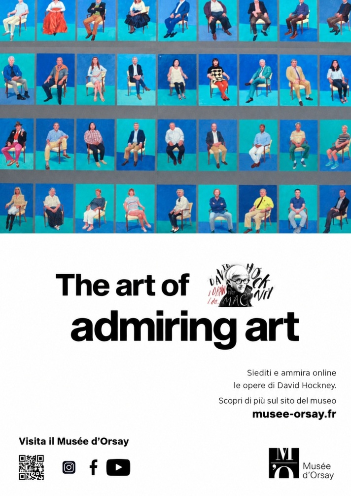
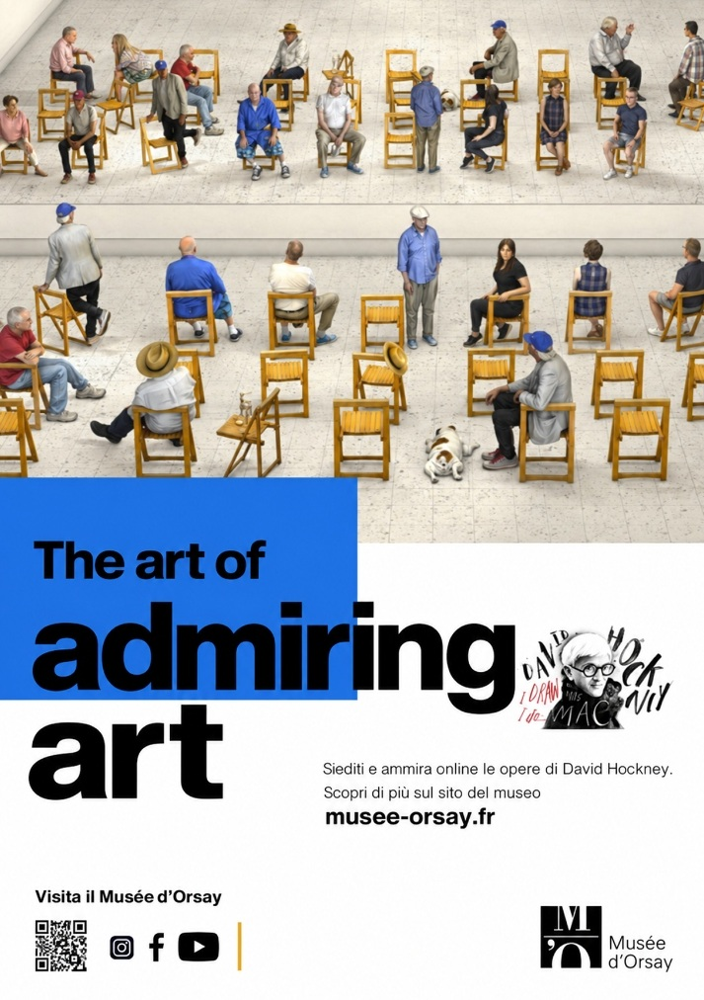
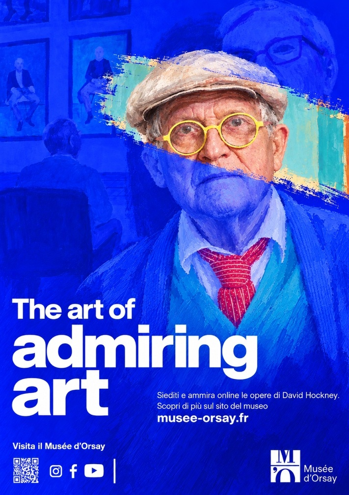

An invitation to sit, slow down and truly observe art.
In contemporary museums, studies demonstrate that visitors spend an average of only 15 to 30 seconds before passing by an artwork.
"The art of admiring art" challenges this culture of accelerated consumption. Rooted in David Hockney's celebrated practice of contemplative vision, multiple perspectives, and vibrant color, this campaign creates a deliberate environment where visitors are invited to sit down, slow their pace, and enter into an authentic, enduring dialogue with the canvas.

The first poster of the campaign revisits David Hockney's celebrated series "82 Portraits and 1 Still-life", where every subject is portrayed seated on the same chair. The modular grid conveys plurality, human presence, and the value of shared observation.
The chair as a symbol of slow observation.
The chair is far more than a functional object: in Hockney's universe, it is an intimate stage for human presence, dignity, and focused contemplation. In this campaign, the chair becomes the central architectural and visual motif — an explicit invitation to pause. Seating visitors directly in front of the masterpieces transforms spectatorship from passive browsing into an intentional, immersive experience.

In the second poster, the museum gallery is populated with chairs facing the artworks: a direct invitation to the physical act of sitting down to rediscover deep viewing time. The electric blue block stamps the title with modernist authority.
From visual research to poster composition.
Deconstructing Hockney's chromatic palette, dynamic perspective games, and innovative interior spaces allowed for an expansive poster series. By pairing high-voltage ultramarine blue with Swiss typographic precision and organic painterly textures, each format bridges traditional exhibition dignity with striking contemporary street visibility.
Study of reverse perspectives and chromatic planes typical of David Hockney's interiors. The editorial composition translates spatial complexity into an accessible and immersive visual grid.
A visual invitation to admire art differently.
The campaign reaches its climax with the iconic portrait poster: David Hockney himself emerging from a field of electric blue, yellow-framed glasses, and vibrant textural strokes. It functions as both a tribute to the master and a clear call to action for art lovers: to rediscover the lost art of lingering.

The main poster of the campaign: the artist's portrait framed by cobalt blue and his iconic yellow round glasses. The white lettering stands out boldly for high urban visibility and institutional sophistication.